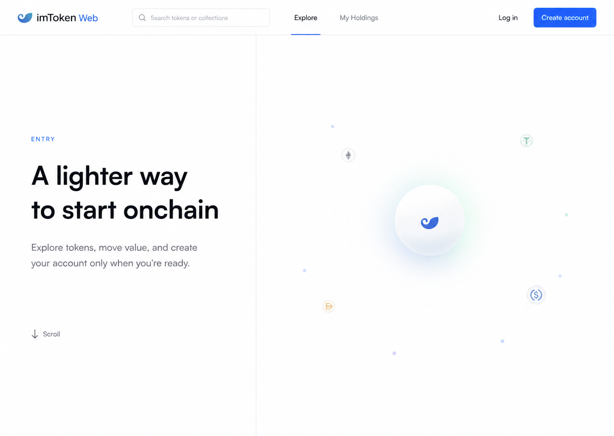
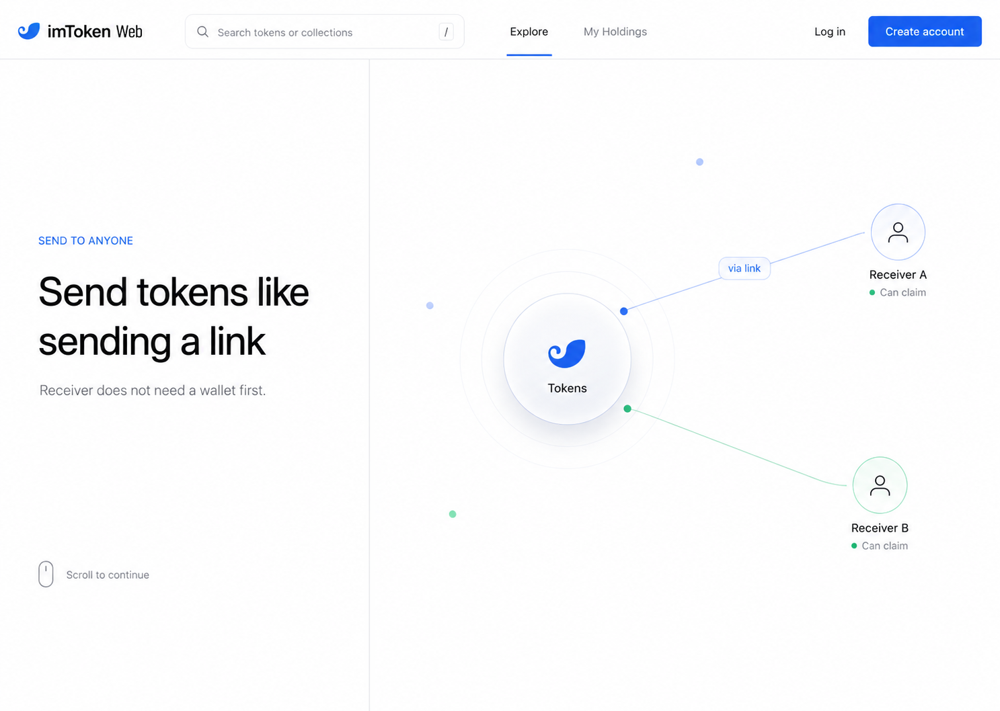
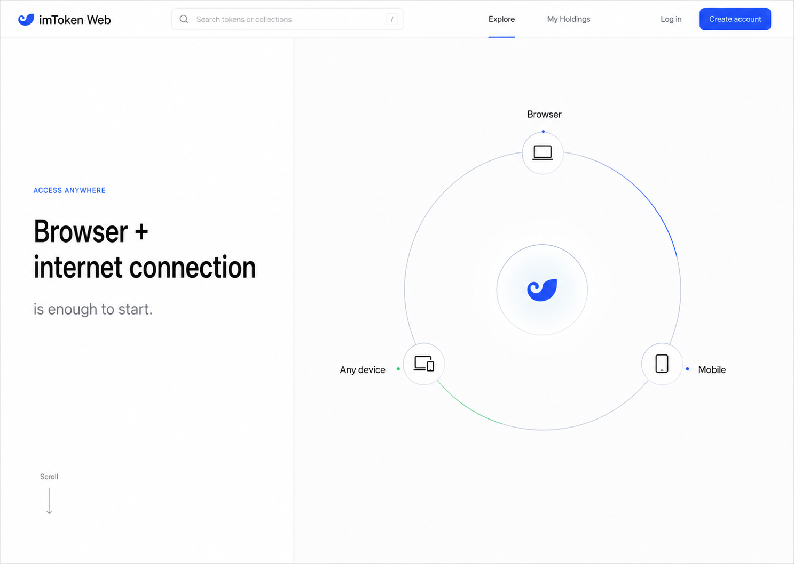
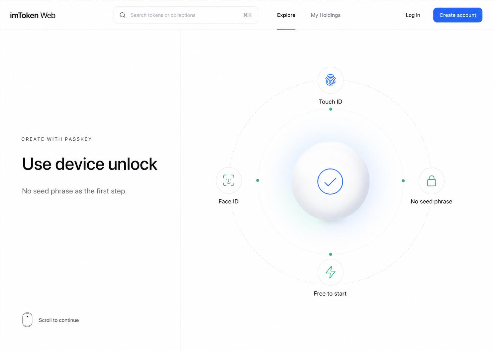
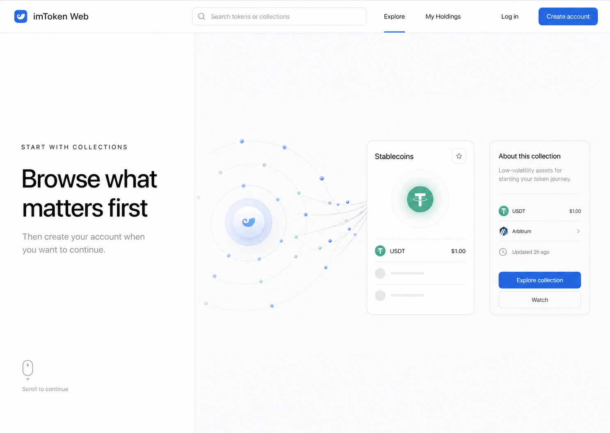
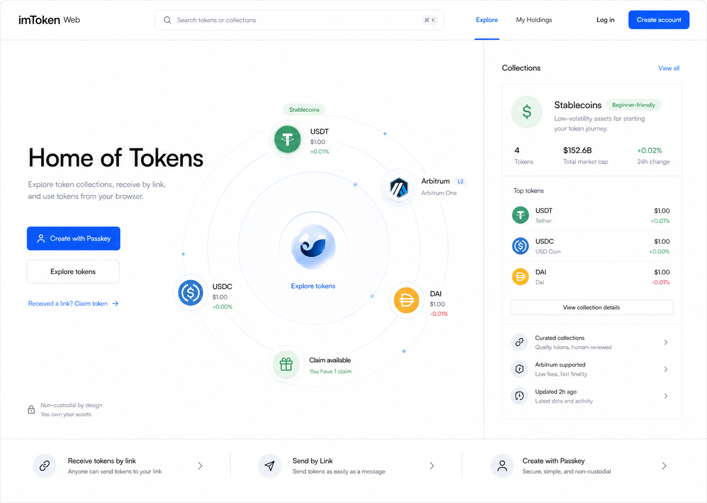
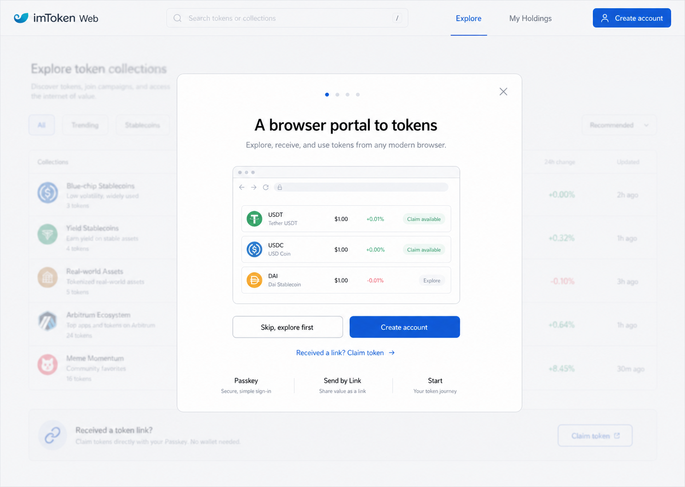
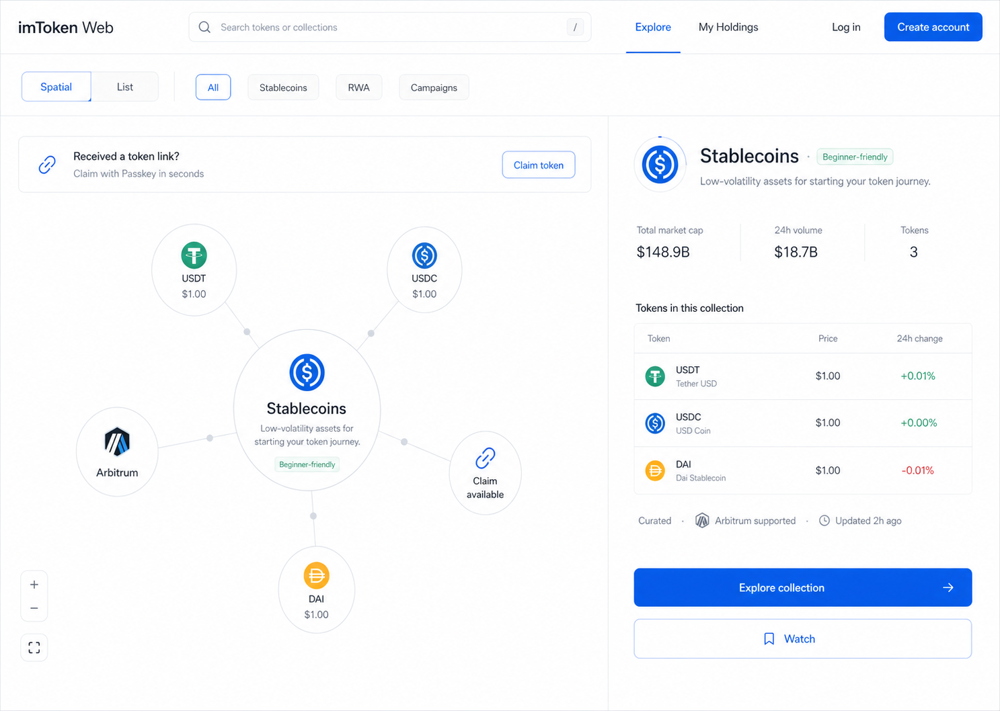
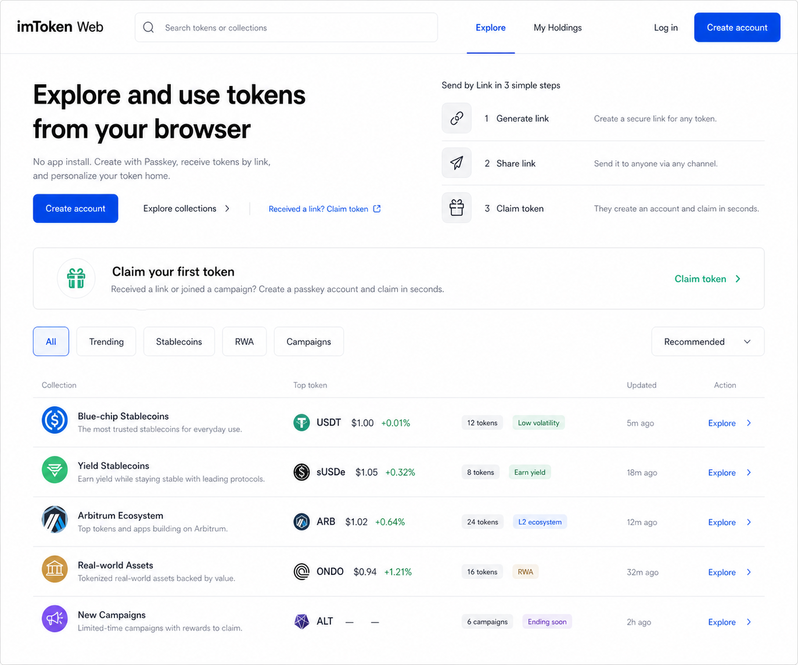

首页改版纲要 · web.token.im
Webapp 首页改进方案
imToken Web 拥有清晰的产品差异化，但当前首页还没有把这个差异化变成新用户行动的理由。本文档梳理优势与用户、转化逻辑、审计缺口，并给出收敛后的改进方向。
日期 2026-05-01
产品 web.token.im
状态 Beta · Arbitrum 主网
阶段 第二轮审计 + 设计方向
01产品定位
就像 Kindle 之于书籍，imToken Web 让你随时随地享受 Token
就像 Kindle 让人随时随地阅读和享受电子书，imToken Web App 的目标是：让用户随时随地阅读和享受 Token（数字货币及更多）。
✅ 是什么
- Token 的网页门户
- 轻量级应用
- Token 与区块链的探索型界面
- 浏览器优先，需要网络
- Just-in-time 访问：浏览器 + 网络连接 = 从任何地方访问
❌ 不是什么
- 又一个加密钱包
- 静态展示网站
- 密钥管理工具
- 需要预先安装的应用
愿景：从孩童到老人，只要能上网浏览，你就始终拥有平等进入代币化世界的机会。这是技术与设计赋予每个人的自由。
02核心能力与价值主张
五项核心能力，每一项都是差异化所在
| 能力 | 对用户意味着什么 |
|---|
| 浏览器原生访问 | 无需安装 App 或插件，任意现代浏览器 + 网络即可全功能使用 |
| Passkey 账户 | 用指纹/面容 10 秒创建钱包，无助记词焦虑 |
| Send by Link | 生成可领取链接；接收方无需提前有钱包，点击即可创建账户并领取 |
| Gas 抽象 / Paymaster | 用 USDT 等稳定币支付 Gas，无需先购买 ETH |
| Token Collection 模型 | 按主题策展 Token——通过 Collection 探索 Token 宇宙，而非面对原始链地址 |
Send by Link — 最核心的差异化能力
它解决了什么问题
- 传统世界：无法向没有账户的人转账；微信用户无法向 PayPal 用户转账
- 加密世界：无法向没有钱包的人发 Token；无法通过 Web2 渠道发送；无法在没有原生 Gas Token 的情况下领取
解决方案
- 发送方生成一条可领取的链接
- 链接通过任意渠道发送（消息、邮件、WhatsApp、QR 码）
- 接收方点击链接，即时创建账户并领取
- 任何人都可以向任何人发送 Token，无需中介授权
🏗️
项目方
通过领取链接向新用户分发 Token，引导新持有者加入
👤
发送方
给刚入圈的朋友发 Token，无需对方提前建钱包
💌
邀请方
通过 WhatsApp 发可领取链接，邀请朋友体验 Token 功能
03目标用户
两类核心用户，起点不同，首页都必须服务到
🔍
加密新手
不熟悉钱包、公链、Gas；习惯 Web2 登录方式（Google、Apple、微信）
首页需要
Passkey 等熟悉的登录方式、引导式入门、情境化教育内容，不用行话
📊
加密用户
持有 Token、关注价格、阅读市场信息，希望了解 Token 用途，并发送和邀请新用户
首页需要
Token Collection、市场背景、持仓盈亏、Token 实用功能、个性化资讯
次要用户：Token 分发方 / 项目方（轻量分发工具）· 已有 imToken App 用户（需要理由使用 Web 版）
04为什么首页转化现在尤其重要
用户量有限，首页是杠杆最高的转化界面
当前漏斗（实测）
- 访客进入 → 看到漂浮气泡，无价值主张
- 访客试图理解产品 → 无差异化说明
- 访客寻找如何开始 → 只有右上角一个账户图标
- 活动/推荐流量进入 → 无专属着陆路径
- 结果：大多数访客无收益地离开
核心问题：首页是为已经理解产品的回访用户设计的——但这类用户是少数。每一个新访客都是被浪费的机会。
05首页的三大核心职责
这三个职责，既是改版目标，也是当前最主要的缺陷
职责一：产品价值传递
5 秒内让访客看懂
让匿名访客在 5 秒内理解「imToken Web 是什么、能做什么、为什么值得一试」
- 用行为承诺替换抽象口号
- 把 Passkey、Send by Link、Gas 抽象等差异化能力显性化
- 建立信任信号（生态合作、安全说明、Roadmap）
职责二：用户 Onboarding
注册动机 + 路径 + 激活
为不同入场路径（主动访问 / 活动链接 / 朋友邀请）提供清晰的账户创建动机和路径，注册后立刻完成第一个激活动作
- 主 CTA 首屏可见
- 活动和链接流量有专属承接入口
- 注册成功后立刻给出首个任务，而不是空白页
职责三：功能引导与使用
探索中自然发现功能
让用户在探索过程中自然发现和使用产品功能，而不是面对「看不懂的气泡」或空白状态
- Token Collection 附带「为什么重要」的上下文
- Spatial View 升级为可行动的探索界面
- 回访用户看到与自身资产和行为相关的内容
06当前首页：三大职责的缺口
现在的首页在做什么，缺了什么
页面结构（Desktop 实测）
- 导航：Logo · 搜索 · My Holdings · My Collections · 账户图标（右上角）
- Hero：「Home of Tokens — Digital assets under control」
- 主视觉：漂浮气泡（Collection 分类名称），中央是「My Holdings」气泡
- 首次弹窗：介绍 Passkey + Send by Link（可跳过）
- 首屏以下：空白——无 Footer，无滚动内容，无信任信号，无 FAQ
| 职责 | 当前缺口 |
|---|
| 产品价值传递 |
Hero 过于抽象，差异化能力藏在弹窗和帮助中心；无 Trust Bar，无 Roadmap 说明 |
| 用户 Onboarding |
全页无主 CTA 填充按钮；活动/推荐流量无专属着陆路径；注册后缺乏激活引导 |
| 功能引导与使用 |
气泡无价格/行动/上下文；「My Holdings」对新用户是空状态；Collection 缺乏「为什么」 |
展开详细审计发现
产品视角
漏斗断裂
匿名访客既无价值主张也无 CTA，Passkey / AA / Send by Link 差异化藏在弹窗和帮助中心
P0
「My Holdings」信息架构错位
占据视觉中心，但对没有持仓的新用户是完全无意义的空状态
P0
活动流量无着陆路径
Devcon、ETH Taipei 的流量进来没有去处；无专属 Campaign 入口
P0
Beta 限制缺乏 Roadmap 说明
仅 Arbitrum 被理解为「未完成」而非「进行中」，损耗信任
P1
设计视角
全页无主 CTA 填充按钮
「Create Wallet / Get Started」完全缺席；账户入口藏在 Header 图标里
P0
视觉层级弱
气泡占据全部注意力却不传达任何产品能力；大量低对比度文字低于 WCAG 4.5:1
P0
主视觉装饰大于叙事
新用户的感受是「看不懂的浮动圆圈」，无法建立产品认知
P1
首屏约 3 秒白屏
无骨架屏兜底，品牌第一印象从「慢」开始
P2
07改进方向
两个相对独立的设计问题，各有两套方案选项
A
Onboarding 与价值传递
核心问题：匿名用户进入首页后，看不懂产品、找不到注册理由、没有主 CTA。
方案 A1
沉浸式滚动叙事
参考 Prototype v3 Direction 3
左右分栏 scroll-led 布局——左侧文案逐章滚动，右侧视觉区 sticky 并随章节平滑切换（Token 粒子 → Passkey → Send by Link），章节结束后无缝进入主界面。






权衡
沉浸感强，但需用户愿意滚动；回访用户需跳过机制
方案 A2
Modal 轮播价值主张
进入首页时弹出大尺寸 Modal，以 3–4 张卡片逐屏展示核心能力，末屏给出「创建账户」或「先探索」出口。再次访问时不再弹出。

适用场景
不改动主界面结构；工程改动量小；回访用户可快速跳过
权衡
Modal 有被跳过风险；信息密度受单张卡片限制
两个方案的共同要素（无论选哪个都需要）
· 「收到链接了？领取你的 Token」常驻入口，承接活动和朋友分享流量
· Send by Link 在 Onboarding 尾部作为增长钩子：每个激活用户都生成一条链接 → 接收方复制 Onboarding 路径 → K-factor > 1
B
首页视图改版
两个选项共同的 IA 前提，应无条件采纳：将 Explore 和 My Holdings 作为首页最顶层的两个切换 Tab，明确区分「探索发现」与「我的持仓」两种使用意图。
导航栏：[Logo] [搜索] │ Explore My Holdings │ [Spatial / List 切换] │ [登录] [创建账户]
↑ 顶层主 Tab，明确两种使用意图
方案 B1
Spatial + List 统一 Shell，信息增强
参考 Prototype v3 Direction 2
保留 Spatial View，将两种视图整合进同一 Shell，共享导航与 Companion Panel。气泡附带真实价格，选中后展开详情面板；切换视图时状态无断层。

适用场景
保留 Spatial 品牌识别度；长期想做空间探索深度功能
权衡
工程复杂度更高；Spatial 学习曲线对新用户仍然存在
方案 B2
取消 Spatial，回归结构化列表视图
放弃 Spatial View，以清晰的结构化列表作为唯一主视图。Collection 卡片附带完整信息层，搜索与筛选前置，首页即是功能界面。

适用场景
优先清晰度与可操作性；移动端体验优先；降低双视图维护成本
权衡
放弃 Spatial 差异化，产品辨识度可能下降
当前首页在对已经相信产品的人说话——把 99% 的新访客当成了已经了解产品的用户。
改版的核心不是视觉升级，而是让首页同时完成三件事：说清楚产品价值、引导用户完成注册、让功能在探索中自然可见。三件事做到位，Home of Tokens 才真正名副其实。